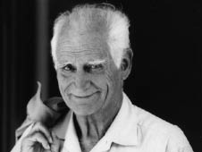

MICHEL SERRES
Jochen Winter'in uyarladığı versiyondan tercüme edilmiştir.
Michel Serres (1930 yılında Agen'de bir köylü ailesinin çocuğu olarak doğdu) filozof, felsefe ve bilim tarihçisidir. 1955 yılında felsefe doçenti oldu. 1956-1958 arasında donanmaya ait çeşitli teknelerde deniz subayı olarak görev yaptı: Atlantik filosu, Süveyş Kanalı'nın yeniden açılması, Cezayir, Akdeniz filosu... Michel Serres 1968 yılında doktora tezini verdikten sonra Clermont-Ferrand, Vincennes ve Paris I'de felsefe dersleri verir. Çok sayıda eserinde, başka şeylerin yanı sıra bilimler tarihiyle de ilgilenir (Hermès, c. I-V, Minuit, 1969-1980). Duyarlılığa olduğu kadar kavramsal zekâya da hitap eden felsefesi müspet bilimler ile toplumsal bilimler arasında olası bağlantılar arar. 1990 yılında Fransız Akademisi'ne seçilir ve Légion d'honneur nişanı alır. Sert bir epistemolog olarak eğitimle ve bilginin dağılımıyla da ilgilenir. Michel Serres, kendisini denizcilik okulundan Fransız Akademisi'ne götüren ve hiç de tipik olmayan yoluyla da ayırt edilir. 1982'den itibaren yılın bir bölümünü Stanford üniversitesinde tarih dersi vererek geçirir. Serres Le contrat naturel [Doğayla Sözleşme] kitabını 1990'da çıkar (F. Bourin). Bu kitap postmodern bir doğa felsefesi olarak okunmuştur. Burada, çevre sorunlarının küreselleştirilmesine tepki gösteriyordu. 2006 yılında Le Pommier yayınlarından Petites chroniques du dimanche soir ve L'art des Ponts. Homo pontifex çıkar. Atlantik-ötesinin kültürünü benimsemeyen Michel Serres yeni teknolojilerin gelişimi üzerine son derece iyimser bir yargıda bulunmaktadır. Bilimler tarihçisi ve kâhin Serres toplumun mevcut altüst oluşlarını insan evriminin sürekliliğine dahil edişiyle kendini gösterir.

SERRES
Michel Serres, sizin felsefi eseriniz müspet bilim ile sezgisel zekâ arasında varılan bağa tanıklık etmektedir. Sizin bakış açınızdan felsefi, bilimsel ve edebi bilgi süreçleri arasındaki etkileşim nasıl cereyan etmektedir?
Sizin sorunuz Fransız dilindeki çok eski bir geleneğe gönderme yapıyor; bu, Almancada, İspanyolcada ve İtalyancada da bulunur. Montaigne, Diderot, Voltaire filozoftular, özellikle de bilim filozofu, ama anlatıdan tiksinmiyorlardı. Bu durum Nietzsche, Cervantes ve Dante için de geçerlidir. Günümüzde bile fizikçilerin, astronomların, biyologların ya da biyokimyacıların kitaplarının çoğu genel olarak çok büyük hikâyeler anlatır; örneğin big-bang'le başlayan ve yıldızların, galaksilerin doğumuyla süren, ardından gezegenlerin soğuması, yaşamın kökeni, insanın ortaya çıkışı, vs. Geçmişte olduğu gibi bugün de bilim, bir anlamda, sonsuza dek tekrar tekrar ele alınan, düzeltilen, yeniden şekillendirilen (her bir durumda bilimin elde ettiği sonuçlara uygun olarak) bu hayranlık verici anlatı etrafında oluşuyor sanki. Ama tinin bütün hikâyesinde, bugün bizim tanıdığımızdan gerçekliğe daha yakın ve daha iyi yapılanmış hiçbir anlatı oluşmamıştır. Bunun anlamı, müspet bilimsel bilgi ile anlatısal tasarımı arasında oldukça olağanüstü bir senteze ortak olduğumuzdur. Bizim global düşünce modellerimiz, inorganik maddenin, yaşamın, insanın, dilin biricik efsanesine denk düşerler. Bu kadar büyüleyici bir evrimin keşfi ve emanet altına alınması bizleri bugün olduğumuz gibi bilgili hayvanlar yapmıştır.
Sizin metinlerinizin merkezinde iki kişi var: Hermes ve Arlequin. Her ikisi de, farklı perspektiflerde, bilim ile sanatın iç içe geçmesini açıklamaktadır. Birisi, Hermes, bilgi ile yaşam alanları arasındaki bir tür arketipsel aracı rolü oynarken, öteki, Arlequin, yaşamın pırıltılı ama aynı zamanda sıklıkla kaotik çokluğunu yansıtmaktadır.
Bir filozof yalnızca fikir tasarlamakla kalmaz, felsefi kişilikler de tasarlar. Uzun süreden beri Hermes'le aramda güçlü bir yakınlık hissediyorum. Bilindiği gibi Hermes tercümanların, ulakların, tacirlerin, hırsızların ve anlatıların Yunan tanrısıydı. Daha ziyade Prometheus'a (ateşi tanrılardan çalmış olan ve insanlar için bir anlamda "çalışma kahramanı" olmuş tanrı) adanmış olan 1960'lı yılların felsefi eğilimleriyle biraz karşıtlık içinde, on dokuzuncu yüzyıldan miras aldığımız üretim toplumunun iletişim toplumuna yerini bırakacağı, dolayısıyla Prometheus'un yerini Hermes'in alacağı fikrinden yola çıktım. Bu hipotez sanırım ki doğrulandı: İletişim toplumunu ilk öngören kuşkusuz ki ben oldum. Felsefenin rolü, misyonu ve hedefi elbette budur: Geleceği öngörmek. Arlequin'e gelince, onu seçmemin nedeni, öncelikle commedia dell'arte'den kaynaklı felsefi bir kişiliği temsil etmesidir, Leibniz de bu kişiyi kullanmıştı. Kültürlerin karışımından, farklı gelenekler ile farklı diller arasındaki buluşmadan söz etmek için bundan yararlanmak istedim. Arlequin bana bu duruma çok uygunmuş gibi geldi, çünkü genellikle farklı boyda, biçimde ve renkte giysiler giyiyordu ve ben onu günümüzde soyut bir şekilde çokkültürlülük olarak nitelenen şeyi belirleyen bir sembol olarak görüyordum.
Bilimsel gelişme esinini daima Arlequin'in temsil ettiği yaratıcı kaostan, hayranlık verici ve beklenmedik olan şeyden alır. Bu bağlamda, şiirsel itkinin doğa bilimleriyle asla çelişmediğini, hatta asıl iksirin o olduğunu açıklamıştınız.
On dokuzuncu yüzyıl sonunda ve yirminci yüzyıl başında Fransız matematikçi ve filozof Henri Poincaré muhteşem bir keşifte bulundu: Newton'un kavramında, tekbiçimli görünen göksel mekanik kavramında ortaya çıkan uyumsuzlukları lineer denklemlerin muğlaklığa düşmeden açıklaması mümkün değildir. Lineer-olmama olarak adlandırılan fenomen, ardından, bugün bildiğimiz kaos teorisine yol açtı. Bergson, kavramsal açıdan kavranması mümkün olmayan, tamamen yaratıcı bir evrim fikrini hayatın kendisine ve bütün olarak evrene uyguladı; bu, tarihin ve özellikle tin tarihinin olumsallığa tabi olduğu anlamına gelir. Aslında, bilimlerin tarihi öngörülemez, kesik kesik dönüşümler biçiminde kendini gösterir. Yalnızca bir aptal ne söyleyeceğini daima bilir, oysa ki zeki biri şaşırtıcı bir şeyin olabileceğini hep dikkate alır. Öngörülemez olanın işe karışmasının zekânın ve entelektüel çalışmanın belirleyici bir özelliği olmasın nedeni budur; bu, aynı zamanda, ister istemez, bilimin de özelliğidir. Bilim ve şiir –ki, etimolojik olarak "imal etmek"ten gelir– kuşkusuz ki aynı tizlik ve aynı dikkatle bağlıdırlar: birinde yöntemsel yaklaşım, diğerinde belirgin bir dil kullanımı.
Kuşkusuz, ama Descartes'tan bu yana doğa bilimleri ve daha da çok tin bilimleri esasen katı rasyonellik ilkesi üzerinde yükselmişlerdir ve bu rasyonellik de –genellikle kötüye kullanılmış olan– değerler karşısında nesnellikle, doğrulamayla ve bağımsızlıkla birliktedir. İnsan bilgisinin gücünün, bu yönelime girdiğinde, zaman içerisinde, var olan her şeyi ele geçirebileceği inancı, son çözümlemede, etik ve metafizik soruları dışlamayı koşullar. Bu bağlamda, insan bu tür soruları nasıl yeniden bulabilir, dünyanın tükenmez karakterine, dolayısıyla daha derin bir yaşam erekliliğine ulaşmayı nasıl yeniden keşfedebilir?
Sizin burada sınırlandırdığınız konu son derece karmaşık. Evet, bilimsel sonuçları giderek artan bir kesinlikle saptıyoruz, ama bilimin tutması gereken yoldan da o denli kuşkudayız. Burada, yeniden, kendimizi beklenmedik ve öngörülemez olanın eşiğinde buluyoruz. Hayatın anlamını ve özelde ya da genelde aldığı anlamı, yönü bana sorarsanız, size bunu asla bilemeyeceğimiz cevabını veririm. Ne gelecekteki evrimlerin hedefini biliyoruz, ne de kendi başına tarihin anlamını. Neyse ki, insanların kimi zaman itaatsiz çocukları var da ana babalarının beklemedikleri şeyleri yapıyorlar ve böylece yetişkinlerin şaşkın şaşkın baktıkları sorunları çözümlüyorlar. Elbette, onlar da sonradan yeni sorunlar yaratıyorlar. Böylelikle, hayatın anlamı tam da ağaçların sürekli dallanıp budaklanmasına benzeyen bu türden yönelim değişikliklerinde kendini gösteriyor.
Nobel fizik ödülü sahibi Charles Roubia dışarıdaki kozmosun güzelliği kadar içerdeki maddi dünyanın güzelliğinin de esinlediği derin hayranlıktan söz etti. Müspet bilimlere bağlı biri olmakla birlikte, bu muhteşem eserin yalnızca tesadüfün ve istatistiğin ürünü olduğu fikrini tamamen geride bırakarak yüksek bir düzeni kutluyordu. Bu eserin kozmosun dışında bulunan bir zekânın ürünü olduğuna inanıyordu.
Charles Roubia burada benim tamamen saygı duyduğum bir inanç bildiriminde bulunmaktadır. Burada iki yan bana önemli geliyor. Birincisi bilim ile şiir arasında biraz önce belirttiğim ilişkiyle ilgili İnsan kendini astronomiye, biyo-kimyaya ya da aynı türden bir düzene adadığında özellikle güzellikten etkilenir. Yalnızca dünyanın allak bullak edici uyumu ya da çeşitliliği değil, ama, somut olarak, örneğin bir cenin organizmasının içinde birçok hücrenin bir araya gelmesinde ifade bulan mucize de insanı etkiler. Dokuz aylık hamileliğin sonunda bu çocuğun bütün DNA ipleri dizilse Dünya ile Ay arasında gidiş-dönüş güzergâhından milyon defa daha büyük bir parkur elde edilir. Bir kadının dünyaya bu kadar ustalıklı bir yaratık getirmesi beni sürekli şaşırtıp heyecanlandırıyor. Dolayısıyla insan eğer güzelliği anlamıyorsa kesinlikle hiçbir şey anlamıyor denebilir. Bizi kurtaran güzelliktir, yalnızca odur, güzelliği hakikatten asla ayırt edemeyiz. Böylece ikinci yana, teolojiye geliriz. Böyle bir mucize karşısında, yaratıcı bir Tanrı'nın olduğuna inanma eğilimi görülür. Ama inanç nedir? İnancı şu şekilde gayet iyi tanımlayabiliriz. 0 ile 1 arasındaki mesafeyi ele alalım, bu küçücük parçada 0 noktası Tanrı'nın var olmadığının kesinliğini belirtirken 1 noktası da Tanrı'nın varlığının kesinliğini belirtir; işte, inanç, tinin mutlak ateizm ile dışardan gelip etkileyen bir gücün sınırsızca tanınması arasında yaptığı sürekli yolculuktur. İki hipotez arasında gidip gelerek, sürekli bu radikal tereddüt durumunda bulunuruz. Ve bu yalnızca Hristiyanlığın icat ettiği bir şeydir, çünkü diğer dinlerde gelenekler vardır ama inanç yoktur. Roma hukukundan ödünç alınan ve Hristiyan teolojisine dahil edilen şu basit kelime, "amentü", bir başka toplumsal düzenin hazırlayıcısıdır: bizimki; inanç üzerinde ve bu inancın, verili tanıma bağlı olarak ifade bulduğu farklı dereceler üzerinde temellenen bizim toplumsal düzenimiz.
Bilimin egemenliğindeki çağımızda inançsız bir etik düşünebilir miyiz?
Bilmiyorum. Etiğin karşılaştığı güçlük, bilime önceden dikte edilemeyecek olmasıdır, çünkü bilim adamlarının özgürlüğü budanamaz ve araştırmanın sonuçları öngörülemez. Sonuç olarak, iş işten geçtikten sonra, kesinliğe dair bir etik ifade etmeye çalışılır, ama elde edilen her sonuç bunu tekrar bastırır, çünkü bilim yeni bir olasılık keşfettiğinde, teknik bunu uygulamaya çabalar ve insanlarda da bu icadı sahiplenme arzusu görülür. O halde, madem ki etik a priori uygulanabilir değildir ve a posteriori olarak da yararsızdır, geriye yapacak ne kalır? Bilimsel alanda, günümüzde kimyayı, biyo-kimyayı ilgilendiren etik sorunlar ve genetik manipülasyonlar daha önce Yunan'da, iki bin beş yüz yıl önce ortaya atılmıştı. O dönemde anatomi pozitif anlamda gelişmişti. Bu durum tıbba, Hipokrates okulu sayesinde, kimi önemli başarılar elde etme imkânı vermişti. Hipokrat tıbbın, deyim yerindeyse, hastaları için hayat memat meselesi olduğunu derhal anlamıştı ve bu nedenle kendi bilimsel çalışmalarına bugün bütün gelişmiş ülkelerde "Hipokrat Yemini" adıyla bilinen bir vasiyet ekledi. Bu ünlü yemin bir etiğin çok uzun süre korunabileceğini göstermektedir: Geçmişte olduğu gibi günümüzde de göreve yeni başlayan herhangi bir hekim öğrenimini bitirirken bu yemini etmek zorundadır. Bundan böyle Hipokrat Yemini'ni bütün bilimlere yayma göreviyle karşı karşıyayız. Ben beş, altı yıl önce bilimsel bir yemin önerdim. Bu yeminle bilim insanı, gördüğü öğrenimin amaçlarına uyacağını gösterecekti. Bunun anlamı, vicdanının onu gördüğü öğrenimin kişisel sorumluluğunu üstlenmeye zorladığıdır ve bu vicdanla, eyleminin etik karakterini garanti eder. Sanırım modern araştırmanın ortaya attığı etik problemin çözümü burada yatmaktadır.
Bilimin teoride oluşturduğu şeyi tekniğin uygulamaya koymasındaki ve kullanılır kılmasındaki süratten söz ettiniz. Tinin ve kültürün tarihinin belli bir noktasına kadar bu fazla kaygılandırıcı değildi, çünkü teknik metafiziğin az çok damgasını taşıyan bir düşünce bağlamında gelişiyordu ve sonuçta sınırlarını da metafizik belirliyordu. Ama tekniğin başlı başına bir tür Tanrı-makine ya da en azından bir dogma halini aldığı andan itibaren, teknolojik ilerlemeyi neyin engelleyebileceğini ve uygarlık için giderek daha tehditkâr olan sonuçlarını nasıl bastırabileceğimizi kendimize sormamamız mümkün değil.
İlerleme fikri on yedinci yüzyıl ile Aydınlanma arasındaki dönemden doğdu. Bilimsel bilgi alanında kalıcı bir yükselen hareket vaat ediyordu ve bu da daima insanlığın iyiliğinin hizmetindeydi. Görünüşe bakılırsa bu hareket yirminci yüzyılın ortasına kadar sürdükten sonra oldukça derin bir kopuşa tanık olundu. Hiroşima ve Nagasaki'de atom bombalarının patlaması, bilim insanlarının –ve en iyilerinden birkaçının– bir anda on binlerce insanı öldüren bir silah inşa edebilecek durumda olduklarını ve yeni düzenlemelerin ardından bu silahların milyonlarca insanı yok edebileceğini ve gezegen üzerindeki her türlü yaşam izini ortadan kaldırabileceğini aniden öğretti. Bu fiyasko fiziğin temellerini sarstı; kimya da güçlü bir çevre kirlenmesinin yol açtığı kimi problemler karşısında başarısız kaldı; sonunda biyolojinin kendisi de etik sorunlara yol açtı, çünkü kimi faaliyetleri bunu dayatıyordu. Bilimler, birbiri ardına, ilerleme fikrini önleyen engellerle karşılaştılar. Bu evrede, bilim ve teknik karşısında tamamen olumsuz tutumu olan bir kuşak ortaya çıktı ve onları vaktiyle nasıl övülmüşlerse aynı enerjiyle mahkûm etti. Frensiz ilerleme fikrinin, tıpkı radikal eleştirisi gibi, gerçekten ciddiye alınmaması gereken çok aşırı bir çözüm önerdiği kanısındayım. Bilimsel gelişme süreci, tıpkı insan faaliyetlerinin bütünü gibi, beklenmedik ve öngörülemez bir şey içerir; iyi ile kötünün, kazanç ile kaybın bir karışımıdır bu. Her şeyin bedeli vardır. Bilim muhtemelen bize çok sayıda avantaj getirmeye devam edecektir, ama bedelini de ödememiz gerekir.
Son beş ya da altı milyon yıl boyunca insan varlığının evrimi dikkate alındığında, semboller yaratan ve aşkınlığa erişebilen entelektüel yaratık olarak insanın bu evrime saf anlamda biyolojik ve ampirik süreci aşan bir anlam verebileceğine inanıyor musunuz?
Bu uçsuz bucaksız dönemler çerçevesinde olayların nasıl geliştiğine dair henüz ayrıntılı bilgimiz yok; ayrıca, bence, ne kadar biyolog varsa o kadar evrim teorisi de var. Herkesin kendi Darwincilik biçimi var, bu nedenle bu Arap saçının içinde kendimizi bulmamız son derece güç. İnsanın herhangi bir şey olduğunu inançlı bir üslupla ileri sürebilmek için hem global hem de uzlaşmasız bir bakışa sahip olmak gerekir. Kesin olan tek şey, insanın farklı yanlardan oluştuğudur. İnsan, örneğin, iletişim süreçlerinin dilini icat etti, bu süreçler elbette iyi işlemektedir. Ama bunun, çevresindeki kimi güçlüklere tepki göstermesini sağlayan bir yöntem keşfetmiş olan tekhücreli bir organizmadan ille de daha iyi olması şart değildir. Bu haber, tekhücreli komşu organizmalar arasında da çok hızlı bir şekilde yayıldı –aşağı yukarı bugün internet aracılığıyla olan gibi. Kısacası, yazgımızın aşkınlık koşullarına bağlı olduğu kanısındayım, ama bu kanıtlanamaz.
Sanallığın içine bütünüyle taşınmış bir gerçekliğin medyaları olan internet ile siber-uzayın klasik metafiziğin yerine geçme riski ve hatta siber-uzayın iyiliğin ve aşkınlığın teknik bir biçimi olduğu fikriyle birlikte dinin yerine geçme riski yok mu sizce?
Bu fazla iddialı bir şey söylemek olur. Mitsel ve dinsel geleneklerde, dünyanın tanrısal yaratıcılarının iletişim sistemleriyle doğrudan hiçbir ilişkisi yoktur. Mesajları iletmekle meşgul olanlar genellikle ast yaratıklardı; örneğin daha önce belirttiğimiz Hermes ya da Hristiyanlığın melekleri. Günümüzde aktarım ve ilişkiler ağının topyekun dönüşümünün enformasyonun kodlanmasını ve aktarımını temelden değiştirdiğini görüyoruz. İnsanlığın şafağında, yazı toplumsal, politik ve bilimsel altüst oluşlara yol açtığında, ardından on altıncı yüzyılda matbaanın icadı din üzerinde, araştırma ve değerler hiyerarşisi üzerinde güçlükle ölçülebilir bir etki yarattığında da aynı olay meydana geldi. Sonuç olarak, enformasyon alışverişinde ve veri vektörlerinde üçüncü bir devrime tanık olmaktayız. Bunun sonuçları daha önceki iki devrimden daha önemsiz olmayacaktır.
Günümüzde, öze dair söyleyecek bir şeyimiz olmadan enformasyon teknolojisini yücelttiğimiz ölçüde, varoluşumuzun içkin olarak tinsel karakterini de bilincimizden adım adım kovmuş oluyoruz. Örneğin tarih-öncesi dinler üzerine Leroi-Gourhan'ın yazılarını düşünürsek, bu uygarlık, bu yıkıma karşı koymak için arkaik kültürlerden ne öğrenebilir?
Ama birçok edimimizde biz de arkaiğiz! Şunu hatırlamamız bile yeter, kanımızdaki tuz oranı denizdekine denktir, bizim atalarımız olan deniz hayvanlarının ortamıdır bu. Yüz milyonlarca yıllık evrimin ardından, benim bedenim kökenindeki yaşamın tüm karakteristiklerini içermektedir; ama biyo-kimya ya da çağdaş felsefe konusundaki bilgilerim ölçüsünde tamamen yeni bir şey de vardır. Aynı düşünce, uygarlığımız için de geçerlidir. Bir yandan, ön plandaki bilim insanlarının elde ettiği son sonuçları öğreniriz; diğer yandan, arkaik düşüncenin içine sıkı sıkıya kök salarız. Bu nedenle bence temel pedagojik hedeflerden biri, eski masalları, Kutsal Kitap geleneklerini, Yunan tragedyalarını çocuklara keşfettirmektir. Genellikle günümüzde eski kültürlerin belgeleri unutuluyor ya da reddediliyor, oysa ki bunlar bizim nereden geldiğimizi ve kim olduğumuzu bize gösterir.
Bu unutma, sanayileşmiş devletlerin sürdürdüğü teknolojik homojenleşmenin entelektüel ve tinsel alanda bizde yol açtığı yitimlerin ciddiyetini çarpıcı biçimde göstermektedir. Batılı insan, periferideki en yoksul ülkelerin yaşam tarzlarında ve sanat eserlerinde belirgin bir tinselliğin ve yaratıcılığın etkili olduğunu, üstelik onların gerçek anlamda bizden daha eğitimli olduklarını, belli bir melankoliyle gözlemlemiyor mu?
İçinde yaşadığımız dünyada merkez yoktur, dolayısıyla periferi de yoktur. Yeni tür iletişim kanalları bütün gezegene uzanan bir ağ oluşturur ve çemberin ya da karenin tersine, bu ağın merkezi her yer ve çevresi hiçbir yerdir. Hangi noktada bulunursak bulunalım, bir anlamda her zaman ortadayızdır, ötekiyle komşuyuzdur, hatta öteki, coğrafi açıdan uzak bir yerde yaşasa bile komşuyuzdur. Sizin sözünü ettiğiniz sanat eserleri merkez ile periferi arasındaki ayrımla değil, bahtsızlıkla açıklanır. Onlar varoluşun temel saptamalarına, ıstıraba, hüzne, ölüme esrarengiz biçimde bağlıdır; örneğin günümüzde bize erişen büyük Güney Amerika romanları Yunan tragedyalarından hiç de farklı değildir. Hayır, onlar dışarıda ya da marjda değiller; gerçekten de nereden uzak olabilirler ki? Zengin ülkelerin insanları yalnızca daha şişman, daha sersem, yaşamsal deneyimden daha yoksunlar; oysa önemli bir eser öncelikle bedenle oluşur.
Bugün, yirminci yüzyılın dile gelmez dehşetlerinin bir daha tekrarlanmaması için yirmi birinci yüzyılda kültürler ve dinler arası diyaloğun daha da geliştirilmesi gerektiği sıklıkla söyleniyor. Siz bu tezi gerçekleşmez ya da ütopik olarak mı görüyorsunuz?
Öncelikle şunu belirtmek gerekir ki, insanlığın bütün tarihi boyunca egemen sınıf hiç bu kadar cahil olmamıştı. Kültürler arasındaki diyaloğu teşvik etmek için öncelikle politikacılar, ama aynı zamanda onların ardından ekonomik iktidar sahipleri evrensel bir kültüre sahip olmalıdırlar.
Geçmişte daha zeki olsalardı, şehirlerde ve kırlarda böylesine zararlara yol açmazlardı. Genellikle kültür kavramı iki şeyi belirtmektedir: Birinci olarak, antropolojik yorumlamada, bir ailenin, bir kabilenin ya da bir halkın geleneklerinin bütünü, belirli bir dilde kullanılan ve bu dilin övdüğü gelenekler; ikinci olarak, akademik perspektif içinde, inceliği ve güzelliği hedefleyen, giderek yükselen entelektüel evrim. Ben üçüncü bir anlam daha katıyorum: kendi kültürümüz ile evrensel kültür arasındaki etkileşim. Kültür, kültürler arasındaki diyalogdur, hep varolan şeydir ve teknik olanaklarımız sayesinde, dışarıya daha fazla açılım sayesinde, gelecekte kuşkusuz daha fazla derinleşecek olan şeydir.
Sonuçta, sanatta, edebiyatta, şiirde ve sinemada, ama aynı zamanda gündelik yaşamda da eksikliğini çektiğimiz şeyi, sevgiyi, çağımızın kairos'u olarak yeniden kazanmalıyız, öyle mi?
Sevgi tek çözümdür. Ancak ender olarak görülür, hele iki insan arasında daha da enderdir. Genel olarak, iktidar, para, rekabet ve dağılma sevgiyi yok eder. Ama kendilerini sevgiye adayanlar, insanlığın gizli aristokrasisidirler. Bu varlıklara pek rastlanmaz, pek de görülmezler. Bunlar ne cumhurbaşkanıdır, ne bilim insanı, ne maliyeci. Sadelikleriyle etkilerler; sadelik belki de onların ermişliğidir. Onlar, İncil'in sözünü ettiği toprağın tuzudurlar. Sevgi bütün insanlar için çözüm olur ama kimse bunu istemiyor. Sonuçta, birçok kişi sevgiden söz ediyor ama hayatın her ânında bunu hissetmek ve sarsılmaz bir sadakatle kalbinin en derininden sevgi göstermek gerekir; ne yazık ki bu son derece istisnaidir ve bu muhtemelen bizim en büyük trajedimiz de budur.